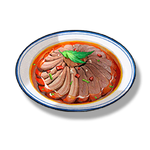

Spicy Meat Slices
Supplies

Increases the ATK of all Resonators in the team by 150 for 30 minutes. In multiplayer games, it only affects your own characters.
A famous dish in Huanglong, the spicy taste is mouth-watering. Some people have tried to replace the spices with fruit sauce, but this was strongly protested by the Huanglong chefs.